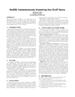
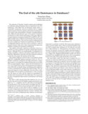

CIDR 2019
January 13-16 , 2019 Asilomar, California
Menu:
CIDR 2019 Gong Show
Monday January 14th
| Elastic In-Memory Transaction Processing for Multi-Tenant Database Systems Seyedehsharareh Mirzargar (EPFL) |
|
| Revisiting RISC-style Data Management System Design Danica Porobic (Oracle) |
|
| Selectivity Computation for In-Memory Query Optimization Jun Hyung Shin (University of California, Merced) |
|
|  | NullDB: Instantaneously Answering Any OLAP Query Andrew Crotty (Brown University) |
| Query-Driven Data Cleaning for Exploratory Queries Stella Giannakopoulou (EPFL) |
|
| Bringing Databases up to Pocket-Scale Carl Nuessle (University of Buffalo, SUNY) |
|
| Making Neural Network Optimizers Practical Rebecca Taft (Cockroach DB) |
|
|  | The End of the x86 Dominance in Databases? Huanchen Zhang (Carnegie Mellon University) |
| Crazy Idea! Databases ⨝ Reinforcement-learning Research (CIDR2) Eugene Wu (Columbia University) |
Tuesday January 15th
| Decentralized Search on Decentralized Web Eric Lo (Chinese University of Hong Kong) |
|
| Serverless Event-Stream Processing over Virtual Actors Philip A Bernstein (Microsoft Research) |
|
| Diversity of LSM tree shapes Mark Callaghan (Facebook) |
|
| Serverless Foundations for Elastic Database Systems Johann Schleier-Smith (UC Berkeley) |
|
| Pat Helland Live! Pat Helland (Salesforce) |
|
| Tools for Advanced Time Series Analytics: Enabling the Future Nesime Tatbul (Intel Labs and MIT) |
|
 |
Storing and Querying Social Graph Data on a Variety of Distributed Systems Christine Reilly (Skidmore College) |
| CryoDrill: Near-Data Processing in Deep and Cold Storage Hierarchies Marcus Paradies (German Aerospace Center) |
|
| Calling a Server-Less Function from a Container-Based System: Why This Fad? Christoph Bussler (Oracle Corporation) |
|
| Data warehouses are dead, long live data warehousing! Mehul Shah (Amazon) |